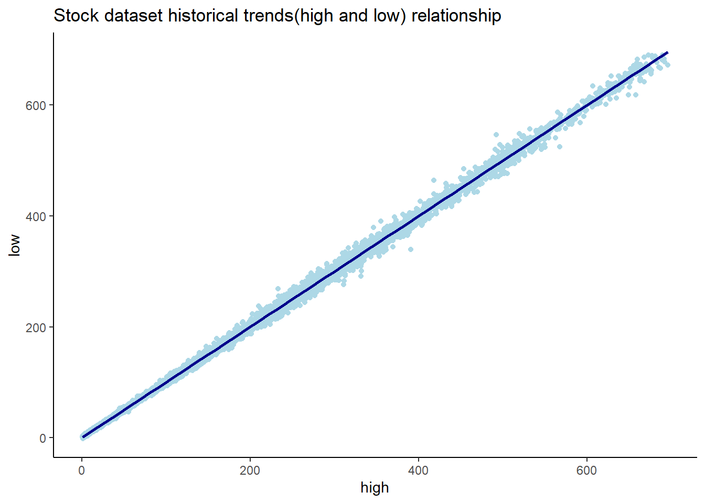
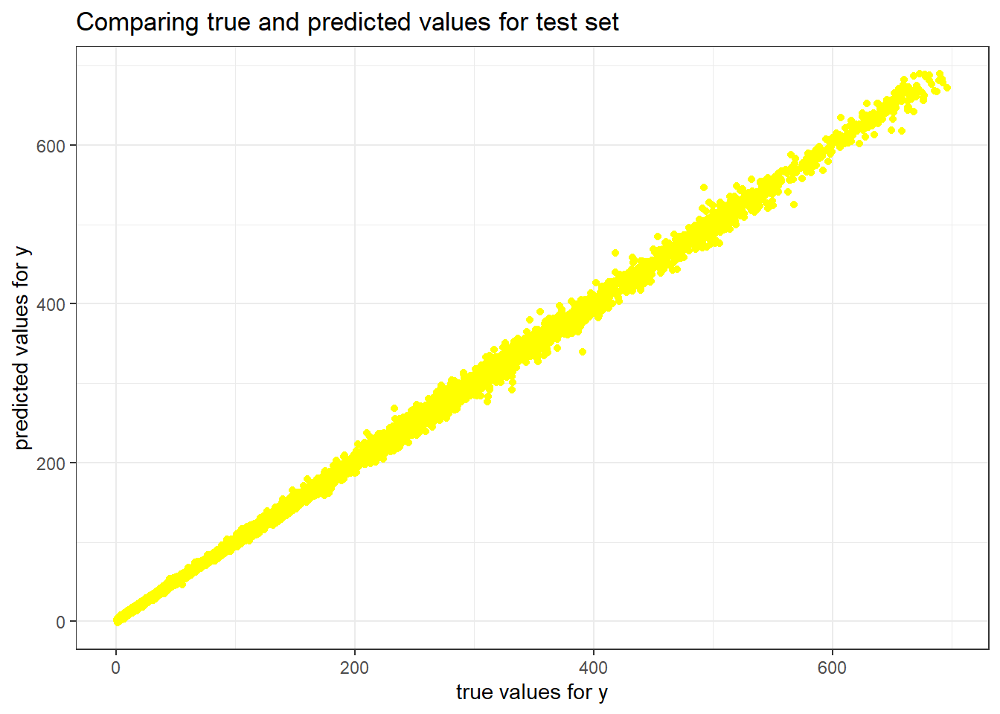
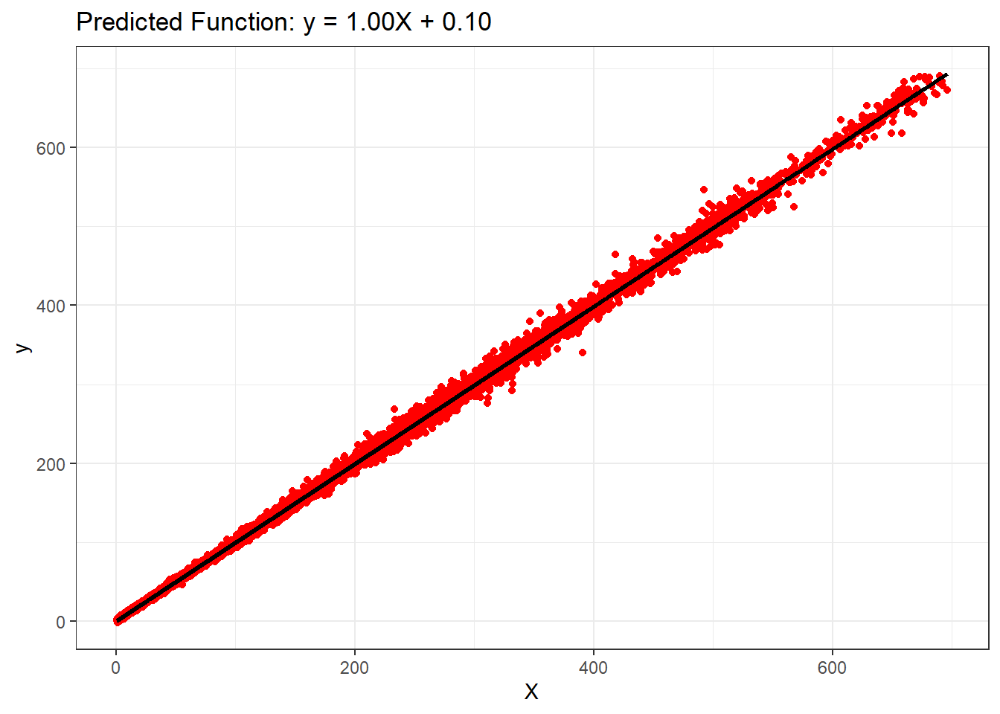
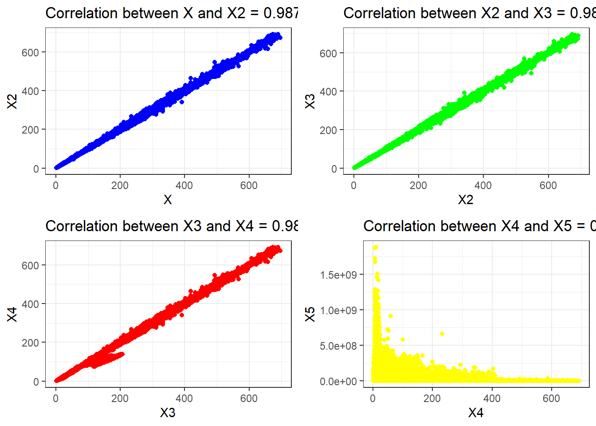
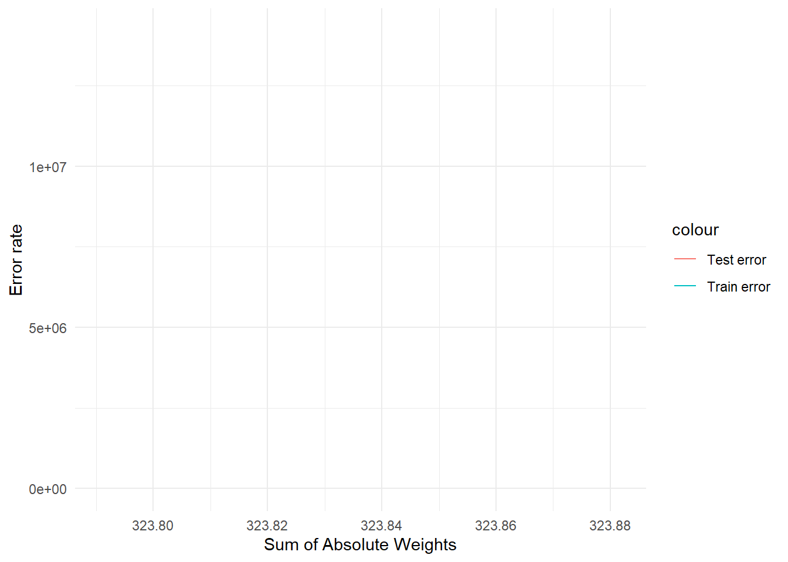

In R, regression refers to a statistical modeling technique used to analyze the relationship between one or more independent variables (predictors) and a dependent variable (response). The goal of regression analysis is to understand how changes in the independent variables are associated with changes in the dependent variable.
Question: How do daily opening prices, trading volumes, and historical trends influence the adjusted closing prices of stocks?
# Load the datasetbig_tech_stock_prices <- readr::read_csv('https://raw.githubusercontent.com/rfordatascience/tidytuesday/master/data/2023/2023-02-07/big_tech_stock_prices.csv')
Rows: 45088 Columns: 8
── Column specification ────────────────────────────────────────────────────────
Delimiter: ","
chr (1): stock_symbol
dbl (6): open, high, low, close, adj_close, volume
date (1): date
ℹ Use `spec()` to retrieve the full column specification for this data.
ℹ Specify the column types or set `show_col_types = FALSE` to quiet this message.
variable
class
description
stock_symbol
character
stock_symbol
date
double
date
open
double
The price at market open.
high
double
The highest price for that day.
low
double
The lowest price for that day.
close
double
The price at market close, adjusted for splits.
adj_close
double
The closing price after adjustments for all applicable splits and dividend distributions. Data is adjusted using appropriate split and dividend multipliers, adhering to Center for Research in Security Prices (CRSP) standards.
volume
double
The number of shares traded on that day.
Synthetic Data Generation:
# Parameters seed <-1numInstances <-nrow(big_tech_stock_prices) # set seedset.seed(seed)# Generate data X <- big_tech_stock_prices$openy_true <- big_tech_stock_prices$closey <- y_true +matrix(rnorm(numInstances), ncol =1)# Plot ggplot(big_tech_stock_prices,aes(x=X, y=y)) +geom_point(color ="lightblue") +geom_smooth(method ="lm",color ="darkblue", linewidth =1) +ggtitle("Stock dataset historical trends(high and low) relationship") +theme_classic()+xlab("high")+ylab("low")
`geom_smooth()` using formula = 'y ~ x'

Multiple Linear Regression:
Multiple linear regression is an extension of simple linear regression in the field of statistical modeling. While simple linear regression involves predicting a dependent variable based on a single independent variable, multiple linear regression allows for the prediction of a dependent variable based on two or more independent variables.
Step 1: Split Input Data into Training and Test Sets:
Initializing a random seed, prepares a dataset, performing train/test split using the rsample package, and then extracting the necessary features and target variable for both the training and testing sets
# Train/test splitlibrary(rsample)numTrain <-100# number of training instancesnumTest <-numInstances - numTrainset.seed(123)data <-tibble(X=X, y=y)split_obj <-initial_split(data, prop = numTrain/numInstances)# Extract train and test data train_data <-training(split_obj)test_data <-testing(split_obj)# Extract X_train, X_test , y_train, y_testX_train <-train_data$Xy_train <-train_data$yX_test <- test_data$Xy_test <- test_data$y
Step 2: Fit Regression Model to Training Set:
Loading the necessary library, specifies a linear regression model, setting the model engine to lm, and then fitting the model to the training data with y as the outcome variable and x as the predictor variable.
# Create a linear regression model specification lin_ref_spec <-linear_reg() |>set_engine("lm")# Fit the model to the training datalin_reg_fit <-lin_ref_spec |>fit(y~ X, data = train_data)
Step 3: Apply Model to the Test Set:
Taking the linear regression model fitted on the training data and applying it to the test set, producing predictions for the outcome variable. The predicted values are stored in the y_pred_test variable for further analysis.
# Apply model to the test sety_pred_test <-predict(lin_reg_fit, new_data = test_data) |>pull(.pred)
Step 4: Evaluate Model Performance on Test Set:
creates a scatter plot with a regression line using ggplot2, visualizing the relationship between the predictor variable X_test and the predicted outcome variable y_pred_test.
ggplot() +geom_point(aes(x =as.vector(X_test), y =as.vector(y_test )),color ="yellow")+# geom_line(aes(x= as.vector(X_test), y = y_pred_test), color = "orange",linewidth = 1)+ggtitle('Comparing true and predicted values for test set') +xlab('true values for y') +ylab('predicted values for y')

We can see in the above plot that the model is linear and the relationship is close.
# Prepare data for yardstick evaluationeval_data <-tibble(truth =as.vector(y_test),estimate = y_pred_test)# Model evaluationrmse_value <-rmse(data = eval_data, truth = truth, estimate = estimate)r2_value <-rsq(eval_data, truth = truth, estimate = estimate)cat("Root mean squared error =", sprintf("%.4f", rmse_value$.estimate), "\n")
The slope depicts that there exists a linear relationship between the variables.
cat("Intercept =", intercept, "\n")
Intercept = 0.1048996
### Step 4: Postprocessing# Plot outputsggplot() +geom_point(aes(x =as.vector(X_test), y =as.vector(y_test)), color ='red') +geom_line(aes(x =as.vector(X_test), y = y_pred_test), color ='black', linewidth =1) +ggtitle(sprintf('Predicted Function: y = %.2fX + %.2f', slope, intercept)) +xlab('X') +ylab('y')

Effect of Correlated Attributes:
Generating four scatter plots to visually inspect the relationships and correlations between different pairs of stock price-related features (x, X2, X3, X4, and X5).
# Generate the variablesset.seed(1)X2 <- big_tech_stock_prices$closeX3 <- big_tech_stock_prices$openX4 <- big_tech_stock_prices$adj_closeX5 <- big_tech_stock_prices$volume# Create plotsplot1 <-ggplot() +geom_point(aes(X, X2), color='blue') +xlab('X') +ylab('X2') +ggtitle(sprintf("Correlation between X and X2 = %.4f", cor(X[-c((numInstances-numTest+1):numInstances)], X2[-c((numInstances-numTest+1):numInstances)])))plot2 <-ggplot() +geom_point(aes(X2, X3), color='green') +xlab('X2') +ylab('X3') +ggtitle(sprintf("Correlation between X2 and X3 = %.4f", cor(X2[-c((numInstances-numTest+1):numInstances)], X3[-c((numInstances-numTest+1):numInstances)])))plot3 <-ggplot() +geom_point(aes(X3, X4), color='red') +xlab('X3') +ylab('X4') +ggtitle(sprintf("Correlation between X3 and X4 = %.4f", cor(X3[-c((numInstances-numTest+1):numInstances)], X4[-c((numInstances-numTest+1):numInstances)])))plot4 <-ggplot() +geom_point(aes(X4, X5), color='yellow') +xlab('X4') +ylab('X5') +ggtitle(sprintf("Correlation between X4 and X5 = %.4f", cor(X4[-c((numInstances-numTest+1):numInstances)], X5[-c((numInstances-numTest+1):numInstances)])))# Combine plots into a 2x2 gridgrid.arrange(plot1, plot2, plot3, plot4, ncol=2)

Now trying different regression models and retrieving the output:
# Split data into training and testing setstrain_indices <-1:(numInstances - numTest)test_indices <- (numInstances - numTest +1):numInstances# Create combined training and testing setsX_train2 <-cbind(X[train_indices], X2[train_indices])X_test2 <-cbind(X[test_indices], X2[test_indices])X_train3 <-cbind(X[train_indices], X2[train_indices], X3[train_indices])X_test3 <-cbind(X[test_indices], X2[test_indices], X3[test_indices])X_train4 <-cbind(X[train_indices], X2[train_indices], X3[train_indices], X4[train_indices])X_test4 <-cbind(X[test_indices], X2[test_indices], X3[test_indices], X4[test_indices])X_train5 <-cbind(X[train_indices], X2[train_indices], X3[train_indices], X4[train_indices], X5[train_indices])X_test5 <-cbind(X[test_indices], X2[test_indices], X3[test_indices], X4[test_indices], X5[test_indices])
`geom_line()`: Each group consists of only one observation.
ℹ Do you need to adjust the group aesthetic?

Ridge Regression:
Ridge regression is a technique used in linear regression to prevent overfitting. It does this by adding a penalty term to the traditional linear regression equation. This penalty encourages the model to avoid extreme values for the coefficients, making it more robust and less sensitive to small changes in the data.
# Convert to data frametrain_data <-tibble(Y = y_train, X_train5)test_data <-tibble(Y = y_test, X_test5)# Set up a Ridge regression model specificationridge_spec <-linear_reg(penalty =0.4, mixture =1) %>%set_engine("glmnet")# Fit the modelridge_fit <- ridge_spec %>%fit(Y ~ ., data = train_data)# Make predictionsy_pred_train_ridge <-predict(ridge_fit, new_data = train_data)$.predy_pred_test_ridge <-predict(ridge_fit, new_data = test_data)$.pred# Make predictionsy_pred_train_ridge <-predict(ridge_fit, new_data = train_data)$.predy_pred_test_ridge <-predict(ridge_fit, new_data = train_data)$.pred# Calculate RMSEcalculate_rmse <-function(actual, predicted) { rmse <-sqrt(mean((actual - predicted)^2)) rmse}# Extract coefficientsridge_coef <-coefficients(ridge_fit$fit)model6 <-sprintf("%.2f X + %.2f X2 + %.2f X3 + %.2f X4 + %.2f X5 + %.2f", ridge_coef[2], ridge_coef[3], ridge_coef[4], ridge_coef[5], ridge_coef[6], ridge_coef[1])values6 <-tibble(Model = model6,Train_error =calculate_rmse(y_train, y_pred_train_ridge),Test_error =calculate_rmse(y_test, y_pred_test_ridge),Sum_of_Absolute_Weights =sum(abs(ridge_coef)))
Warning in actual - predicted: longer object length is not a multiple of
shorter object length
# Combining the resultsfinal_results <-bind_rows(results, values6)final_results
# A tibble: 5 × 4
Model Train_error Test_error Sum_of_Absolute_Weig…¹
<chr> <dbl> <dbl> <dbl>
1 38.53 X + 229.68 113. 2305. 324.
2 38.53 X + -55.63 X2 + 229.68 113. 2305. NA
3 39.06 X + -618476.61 X2 + NA X3… 113. 14185232. NA
4 48.71 X + 518155.47 X2 + NA X3 … 113. 11890329. NA
5 0.00 X + 0.00 X2 + 0.00 X3 + 0.… 113. 103. 27121.
# ℹ abbreviated name: ¹Sum_of_Absolute_Weights
Lasso Regression:
Lasso regression, short for Least Absolute Shrinkage and Selection Operator, is a type of linear regression that adds a penalty to the ordinary least squares (OLS) objective function. This penalty, known as the L1 penalty, encourages sparsity in the model by driving some of the coefficients to exactly zero.
# Define the lasso specificationlasso_spec <-linear_reg(penalty =0.02, mixture =1) %>%set_engine("glmnet")# Ensure the data is combined correctlytrain_data <-tibble(y = y_train, X1 = X_train5[,1], X2 = X_train5[,2], X3 = X_train5[,3], X4 = X_train5[,4], X5 = X_train5[,5])# Fit the modellasso_fit <- lasso_spec %>%fit(y ~ ., data = train_data)# Extract coefficientslasso_coefs <- lasso_fit$fit$beta[,1]# Predictionsy_pred_train_lasso <-predict(lasso_fit, new_data = train_data)$.predy_pred_test_lasso <-predict(lasso_fit, new_data =tibble(X1 = X_test5[,1], X2 = X_test5[,2], X3 = X_test5[,3], X4 = X_test5[,4], X5 = X_test5[,5]))$.pred# Create the model stringmodel7 <-sprintf("%.2f X + %.2f X2 + %.2f X3 + %.2f X4 + %.2f X5 + %.2f", lasso_coefs[2], lasso_coefs[3], lasso_coefs[4], lasso_coefs[5], lasso_coefs[6], lasso_fit$fit$a0[1])values7 <-c(model7, sqrt(mean((y_train - y_pred_train_lasso)^2)),sqrt(mean((y_test - y_pred_test_lasso)^2)),sum(abs(lasso_coefs[-1])) +abs(lasso_fit$fit$a0[1]))# Make the results tibblelasso_results <-tibble(Model ="Lasso",`Train error`= values7[2], `Test error`= values7[3], `Sum of Absolute Weights`= values7[4])lasso_results
# A tibble: 1 × 4
Model `Train error` `Test error` `Sum of Absolute Weights`
<chr> <chr> <chr> <chr>
1 Lasso 112.846166159424 2199.69775626085 91.4551170916406
Hyperparameter Selection via Cross-Validation:
Hyperparameter selection via cross-validation is a method used to find the best settings for the hyperparameters of a machine learning model. undefined